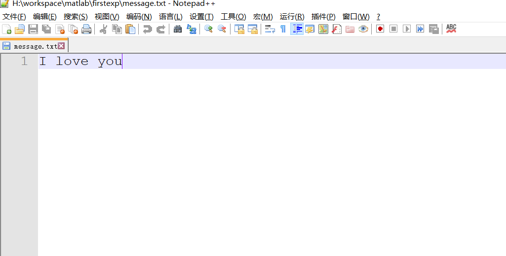
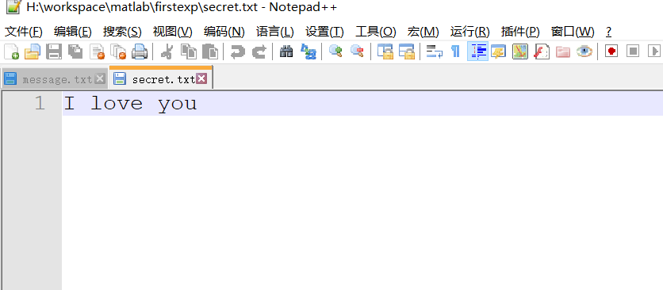

《多媒体技术》第1次作业
1. 将一副彩色图片，变成灰度图，比较变换前后Bitmap格式和JPG格式图像大小¶
解：
(1)技术思路、主要计算公式
- 将老师给的jpg图片输入matlab，转为bmp图片
- 调用rgb2gray函数将彩色图像转为灰度图
(2)核心代码
1 2 3 4 5 6 7 8 | % 变成灰度图像 imgjpg = imread('zuoye.jpg'); imwrite(imgjpg, 'clone.bmp'); imgbmp = imread('clone.bmp'); imgGraybmp = rgb2gray(imgbmp); imgGrayjpg = rgb2gray(imgjpg); imwrite(imgGrayjpg, 'cloneGray.jpg'); imwrite(imgGraybmp, 'cloneGray.bmp'); |
(3)运行结果(包含主机配置，运行环境，开发环境，执行时间，输入文件名，输出文件名，可以给出简单的分析)
主机配置：惠普暗影精灵第二代,CPU:i7-7700HQ,RAM:16GB
运行环境:WIN10
开发环境:Matlab2016a
执行时间:2019.10.4
输入文件:zuoye.jpg
输出文件:cloneGray.jpg,cloneGray.bmp
变换前jpg大小:5.78M
变换后jpg大小:3.16M
变换前bmp大小:68.6M
变换后bmp大小:22.8M
图片展示：

2 用jpg压缩一副图片，从bitmap到jpg，比较不同压缩率下的计算时间，主观评价容忍度¶
解:
(1)技术思路、主要计算公式
用imwrite语句对第一题中产生的bmp图片进行压缩，用matlab检测运行时间
(2)核心代码
1 2 3 4 5 6 | imwrite(imgbmp, 'compression90.jpg', 'quality', 90); imwrite(imgbmp, 'compression80.jpg', 'quality', 80); imwrite(imgbmp, 'compression70.jpg', 'quality', 70); imwrite(imgbmp, 'compression50.jpg', 'quality', 50); imwrite(imgbmp, 'compression30.jpg', 'quality', 30); imwrite(imgbmp, 'compression10.jpg', 'quality', 10); |
(3)运行结果
主机配置：i7-7700HQ,RAM:4GB
运行环境：win10
开发环境：matlab2016a
输出文件名：compression90.jpg，compression80.jpg，compression70.jpg，compression50.jpg，compression30.jpg，compression10.jpg


视觉容忍度：
压缩质量因子为90，80，70，50时并不能看出与原图有任何差别，容忍度为5级
压缩质量引子为30时，天空出现不易察觉的白色缝隙，容忍度为4级
压缩质量因子为10时，天空中出现明显彩色条纹，其余部分表现良好，容忍度为3级
压缩时间，调用matlab clock函数计算的时间如下：
| 质量 | 压缩时间 |
|---|---|
| compression90.jpg | 0.9690 |
| compression80.jpg | 0.9180 |
| compression70.jpg | 0.8960 |
| compression50.jpg | 0.8090 |
| compression30.jpg | 0.7890 |
| compression10.jpg | 0.7370 |
3 在彩色Bitmap位图内，嵌入一段字符串，并正确提取¶
(1)技术思路
可以把文字字符串的每一位，替换掉bmp图片的每一个像素的红色的最后一位
- 嵌入函数
Embed
读入一副图片(注意不能是jpg格式的),读入需要隐写的信息文件，判断是否能够隐写，之后调用randinterval函数随机选取R图层上的点，嵌入消息
- 随机函数
randinterval
通过给定的key生成随机的样本点
- 提取函数
Extract
指定图片，和随机种子提取出信息
(2)核心代码
Embed
1 2 3 4 5 6 7 8 9 10 11 12 13 14 15 16 17 18 19 20 21 22 23 24 25 26 27 28 29 30 31 32 33 | %input: 文件，file要隐写的信息 key密钥 % functionname: function description function [ste_cover, len_total] = Embed(input, file, output, key) cover = imread(input); ste_cover = cover; ste_cover = double(ste_cover); % f_id = fopen(file, 'r'); [msg, len_total] = fread(f_id, 'ubit1'); % [m, n] = size(ste_cover); if len_total > m*n error('嵌入消息过大，请更换图像'); end % p = 1; [row, col] = randinterval(ste_cover, len_total, key); for i = 1:len_total ste_cover(row(i), col(i)) = ste_cover(row(i), col(i)) - mod(ste_cover(row(i),col(i)), 2) + msg(p, 1); %通过模2来取出最后一位 if p == len_total break; end p = p+1; end ste_cover = uint8(ste_cover); imwrite(ste_cover, output); subplot(121);imshow(cover);title('原来的图片'); subplot(122);imshow(output);title('隐写后的图片'); |
随机函数randinterval
1 2 3 4 5 6 7 8 9 10 11 12 13 14 15 16 17 18 19 20 21 22 23 24 25 26 27 28 29 30 31 32 33 34 35 36 37 38 | function [row, col] = randinterval(matrix, count, key) %计算间隔的位数 [m,n] = size(matrix); interval1 = floor(m*n/count)+1; interval2 = interval1 - 2; if interval2 == 0 errot('载体太小不能将信息隐藏进去'); end %生成随机序列 rand('seed', key); a = rand(1, count); %初始化 row = zeros([1 count]); col = zeros([1 count]); %计算row和col r = 1; c = 1; row(1,1) = r; col(1,1) = c; for i =2:count if a(i) >= 0.5 c = c + interval1; else c = c+interval2; end if c>n r = r+1; if r>m error('载体太小不能将密码信息隐藏进去'); end c = mod(c, n); if c==0 c = 1; end end row(1,i) = r; col(1,i) = c; end |
提取函数Extract
1 2 3 4 5 6 7 8 9 10 11 12 13 14 15 16 17 18 19 20 21 22 23 24 25 26 27 28 | % Extract.m: function description % output即隐写的图片，len_total是隐写的消息长度，goalfile是输出的目标文件，key是密钥 function result = Extract(output, len_total, goalfile, key) ste_cover = imread(output); ste_cover = double(ste_cover); [m,n] = size(ste_cover); frr = fopen(goalfile, 'a+'); p = 1; [row, col] = randinterval(ste_cover, len_total, key); for i = 1:len_total if bitand(ste_cover(row(i), col(i)), 1) == 1 fwrite(frr, 1, 'ubit1'); result(p,1) = 1; else fwrite(frr, 0, 'ubit1'); result(p,1) = 0; end if p == len_total break; p = p +1; end end fclose(frr); f = fopen(goalfile, 'r'); text = textscan(f, '%c'); text{1} |
(3)运行结果
主机配置：惠普暗影精灵第二代,CPU:i7-7700HQ,RAM:16GB
运行环境:WIN10
开发环境:Matlab2016a
执行时间:2019.10.4
输入文件: 1031.png,message.txt

输出文件: 1031hide.png,secret.txt
